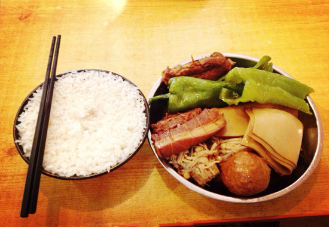

舌尖上的美味—济宁甏肉干饭，孕育传承了600多年的老味道
发布时间: 2022-04-07 4859 次浏览
-
俗话说，三月不减肥，四月徒伤悲，小编作为一名吃货，真是在减肥的路上渐行渐远。总是管不住自己的嘴，真是深深的罪过。每天总想吃点好吃的犒劳一下自己，最近小编十分想念我们家乡的甏肉干饭，那美味简直让你无法抗拒。今天就安利给大家，相信你也会爱上的。
山东不仅是文化的圣地，更是美食的天堂。甏肉干饭就是孔子的故乡—山东济宁的传统特色小吃，距今已有六百多年的历史，孕育了六百多年的老味道。甏肉色泽红韵，质地柔嫩，肥而不腻，烂而不糜，汤浓味厚，堪称一绝。吃上一口口味醇香鲜美，厚厚的醇香让你无法抗拒。甏肉干饭被极多数山东人所喜爱，成为济宁首屈一指的小吃，说到这小编又要流口水了。
甏肉里的“甏”其实是一种盛放食物的器皿，以深型砂罐称之为“甏”，甏肉采用精选新鲜猪五花肉或里脊肉配以传统特殊工艺，在中国传统的砂甏中用木炭文火精心烹制而成的。那不大不小的一块五花肉，经过甏器皿所做，添加了刚好的佐料，掌握了一定的火候，掀开盖子，直接沁人心脾，忍不住吃上一口。
甏肉干饭可是非常古老的小吃，相传，甏肉干饭起源于元朝。随着京杭大运河的开通，南方的大米从水路源源不断运往北方。南方客商坐船来北方做生意，因为吃不惯北方的饭菜，出行前，总爱携带一些腊肉，同时焖煮一大坛卤肉，放入南方的豆制品，随船北上，易于保存，由于反复加温焖煮，糯烂奇香。
吃饭时，蒸熟的米饭拌上陶器炖出来的肉并浇一点卤汤，别有一番风味，引得济宁人争向仿制，逐步发展成今日的甏肉米饭。解放前，常有经营者以扁担挑着饭菜走街串巷，一头挑炭炉，一头挑饭，甏置于炭炉之上，此法可节约炭火，又使肉吃出一种别样风味。
如今，甏肉干饭已经不仅局限在只有甏肉上了，还增添了“面筋肉丸”、“肉卷”、“豆腐块”、“鸡蛋”、“海带”、"豆腐丝"、"四喜丸子"等等，这些菜都放在盛有煮甏肉的老汤里面加热，之间互相影响，相辅相成自形成一种与分别吃大不一样的独特口味。这既丰富发展了甏肉干饭，又更加适应了现代人的饮食习惯。
黄河文化旅游宣传平台
联系电话: 17753010787
版权所有：山东大学技术团队
技术支持：山东大学技术团队